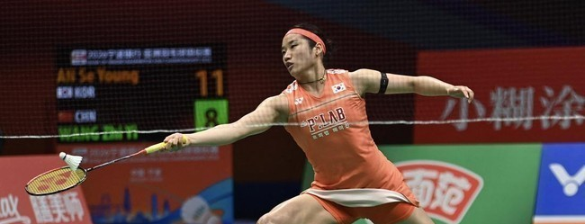
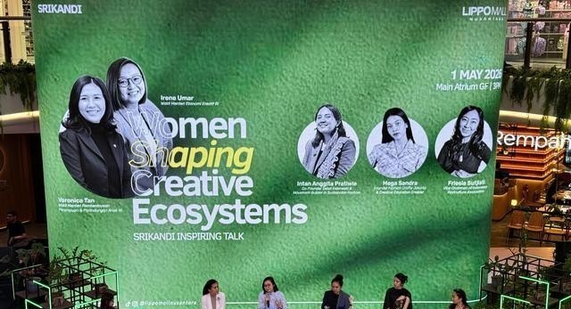

Tim badminton putri Korea Selatan berhasil keluar sebagai juara Uber Cup 2026 usai mengalahkan China 3-1 pada laga final, Minggu (3/5). Korea Selatan menang 3-1 atas China.
Tunggal putri andalan Korea Selatan, An Se Young, sukses membuka keunggulan bagi timnya 1-0 atas China pada partai final Uber Cup 2026.
Ia tampil dominan saat menghadapi wakil China, Wang Zhi Yi, dalam laga yang berlangsung di Forum Horsens, Horsens, Denmark, Minggu (3/5) sore WIB. An Se Young menang 21-10 dan 21-13.
Sejak awal pertandingan, An Se Young langsung menunjukkan kualitasnya sebagai salah satu pemain terbaik dunia.
Pada gim pertama, ia melesat cepat dengan keunggulan 7-1, membuat Wang Zhi Yi kesulitan mengembangkan permainan. Tekanan demi tekanan dari An Se Young membuat jarak skor semakin lebar hingga 11-2 saat interval gim pertama.
Selepas jeda, dominasi pemain Korea Selatan tersebut tak terbendung. Ia terus menekan hingga unggul 16-5, sebelum akhirnya menutup gim pertama dengan kemenangan telak 21-10.
Memasuki gim kedua, situasi tak banyak berubah. An Se Young kembali tampil agresif dan langsung unggul 5-0.
Meskipun Wang Zhi Yi sempat mencoba bangkit dan memperkecil ketertinggalan menjadi 3-7, An Se Young tetap menjaga kontrol permainan. Ia memimpin 11-5 saat interval gim kedua.
Setelah jeda, Wang Zhi Yi sempat memberikan perlawanan dengan memangkas selisih poin menjadi 10-14. Namun, pengalaman dan ketenangan An Se Young membuatnya mampu menjaga momentum. Ia kembali menjauh dan akhirnya menutup gim kedua dengan kemenangan 21-13.
Kemudian pada gim kedua, China menang di sektor ganda putri lewat Liu Sheng Shu/Tan Ning 21-15 dan 21-12 atas pasangan Korea Jeong Na Eun/Lee So Hee. Skor 1-1.
Pada partai ketiga, Korea Selatan berhasil kembali memimpin 2-1 lewat kemenangan tunggal putri Kim Ga Eun 21-19, 21-15 atas Chen Yu Fei.
Sedangkan pada partai keempat ganda putri Korea Selatan Baek Ha Na/Kim Hye Jeong menang 16-21, 21-10, 21-13, atas pasangan China Jia Yi Fan/Zhang Zhu Xian. Kemenangan 3-1 atas China memastikan Korea Selatan keluar sebagai pemenang Uber Cup 2026.
Departemen Pertahanan Amerika Serikat (AS) menandatangani kesepakatan dengan tujuh raksasa teknologi untuk menggunakan teknologi kecerdasan buatan (AI) mereka di jaringan militer yang dirahasiakan. Perjanjian ini tidak melibatkan Anthropic, yang sebelumnya menjadi satu-satunya mitra AI Pentagon.
Pentagon mengumumkan perjanjian tersebut pada Jumat (1/5) dengan perusahaan-perusahaan seperti SpaceX, OpenAI, Google, Microsoft, Nvidia, Amazon Web Services, dan Reflection.
Anthropic tidak dilibatkan dalam perjanjian ini setelah perusahaan menolak ketentuan yang memungkinkan militer menggunakan Claude, model AI milik mereka, untuk "semua tujuan yang sah", termasuk senjata otonom dan pengawasan massal.
Pentagon sebelumnya menyebut Anthropic sebagai "risiko rantai pasok", label yang sebelumnya hanya digunakan untuk perusahaan yang terasosiasi dengan musuh asing.
Buat Anthropic, pengecualian ini berdampak besar secara finansial. Undang-Undang One Big Beautiful Bill tahun lalu mengalokasikan dana besar bagi Pentagon untuk digunakan dalam bidang AI dan operasi siber ofensif. Sejak itu, perusahaan-perusahaan teknologi berebut untuk bisa mendapat dana tersebut.
Namun demikian, Gedung Putih kembali membuka pembicaraan dengan Anthropic dalam beberapa pekan terakhir setelah perusahaan tersebut mengumumkan sejumlah terobosan teknologi yang signifikan.
Pentagon menegaskan kesepakatan ini merupakan bagian dari transformasi besar militer AS. Teknologi AI dari perusahaan-perusahaan itu akan digunakan untuk "penggunaan operasional yang sah".
"Perjanjian ini akan menjadikan militer sebagai pasukan tempur yang mengutamakan AI dan akan memperkuat kemampuan prajurit kami untuk mempertahankan keunggulan dalam pengambilan keputusan di seluruh bidang pertempuran," demikian pernyataan Pentagon, melansir CNN, Jumat (1/5).
Pentagon juga menyoroti keberhasilan platform GenAI.mil miliknya, dengan menyebutkan bahwa 1,3 juta personel Departemen Pertahanan telah menggunakan layanan tersebut.
Militer AS mulai memanfaatkan berbagai alat kecerdasan buatan untuk meningkatkan serangannya. Dalam perang dengan Iran, militer AS menggunakan AI untuk melancarkan serangan ke 1.000 target dalam 24 jam pertama.
Menurut Komando Pusat AS, pihaknya menggunakan AI untuk mengelola jumlah data yang sangat besar dengan cepat dalam operasi melawan Iran.
Menurut juru bicara Komando Pusat Kapten Timothy Hawkins, teknologi AI disebut memainkan peran kritis dengan mendukung penyaringan awal data yang masuk, memungkinkan analis manusia untuk fokus pada analisis dan verifikasi tingkat tinggi dalam serangan ke Iran.
Hawkins menegaskan AI hanya berfungsi sebagai alat bantu, bukan pengambil keputusan, yang tetap berada di bawah kendali penuh analis manusia dalam setiap operasi.

April yang baru lewat menyisakan banyak catatan menarik dari dunia seni. Salah satunya, perayaan Hari Kartini lewat program Srikandi Vol. 2: She Shapes, She Builds, She Becomes dengan bintang tamu Wakil Menteri Ekonomi Kreatif, Irene Umar beserta Wakil Menteri Pemberdayaan Perempuan dan Perlindungan Anak RI, Veronica Tan. Ajang ini jadi wadah berkreasi. Salah satunya, pameran seni yang menampilkan karya tekstil seniman wanita. Pencinta seni diajak melihat lebih dekat cerita, proses, dan makna di balik setiap karya seni.
Publik juga diajak mengapresiasi kreativitas seniman perempuan dalam menghadirkan kain tradisional sebagai karya indah penuh nilai budaya. Tak henti sampai di situ, sebagai bagian dari komitmen terhadap keberlanjutan serta inovasi, Srikandi Vol. 2 menghadirkan Ecoprint Fashion Showcase yang terdiri Ecoprint Fashion Week dan Pop-Up Bazaar. Acara ini menampilkan koleksi fashion berbasis teknik ramah lingkungan sekaligus menghadirkan berbagai lini busana yang dipimpin perempuan. Di sini, para pelaku seni saling terkoneksi.
Srikandi Vol. 2 menyapa pencinta seni dan mode dari 20 April hingga 17 Mei 2026 di Lippo Mall Nusantara Jakarta. Di sini, para seniman perempuan saling berbagi inspirasi dan berkembang bersama. Dalam sesi gelar wicara, Veronica Tan berbagi perspektif.
“Perempuan saat ini telah memiliki kapasitas mumpuni. Yang dibutuhkan bukan lagi pemberdayaan, melainkan ruang dan kesempatan setara untuk menampilkan potensi diri. Dengan akses yang sama, perempuan dapat bergerak dan tumbuh bersama,” katanya.
Veronika Tan menyebut penguatan peran wanita juga dilakukan lewat kolaborasi lintas pihak. Pengelolaan ruang kreatif dapat berjalan berdampingan dengan dikelola secara profesional, didukung ketersediaan ruang yang terbuka bagi perempuan untuk berkarya.
“Kolaborasi kunci utama, baik antara pemerintah, pengelola, maupun masyarakat. Dengan semangat kebersamaan, diharapkan makin banyak perempuan terlibat, berkontribusi, dan bergerak bersama mendorong pertumbuhan ekonomi kreatif,” Veronika Tan menjelaskan.
Kepada jurnalis di Jakarta, pekan ini, Irene Umar menambahkan, pergelaran bertema Srikandi inisiatif yang luar biasa karena menghadirkan ruang bagi para pelaku ekonomi kreatif untuk berkembang.
“Secara khusus, kegiatan ini juga menjadi wadah bagi perempuan untuk berkumpul, saling terhubung, lalu melangkah bersama, sehingga dapat terus berkarya dan bersinar,” Irene Umar mengapresiasi.
Senada dengan Irene Umar dan Veronika Tan, Mall Direktur Lippo Mall Nusantara Hiu Mulyawati menyatakan pihaknya menghadirkan ruang yang menginspirasi, membuka peluang bagi perempuan untuk terus berkarya, berkembang, dan membentuk karakter kuat.
“Kami percaya perempuan memiliki peran penting dalam membentuk industri kreatif (termasuk seni) lebih dinamis, sekaligus menciptakan dampak lebih luas bagi masyarakat,” Hiu Mulyawati memaparkan.